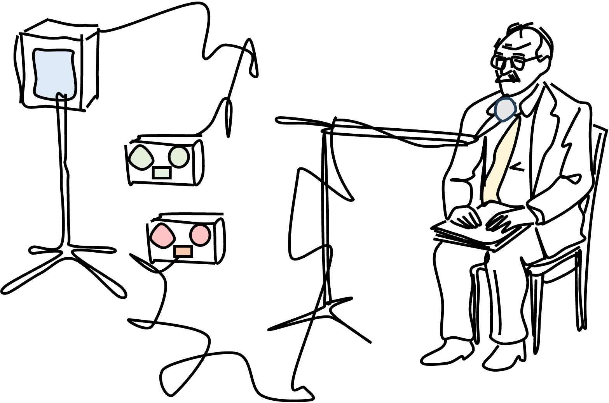
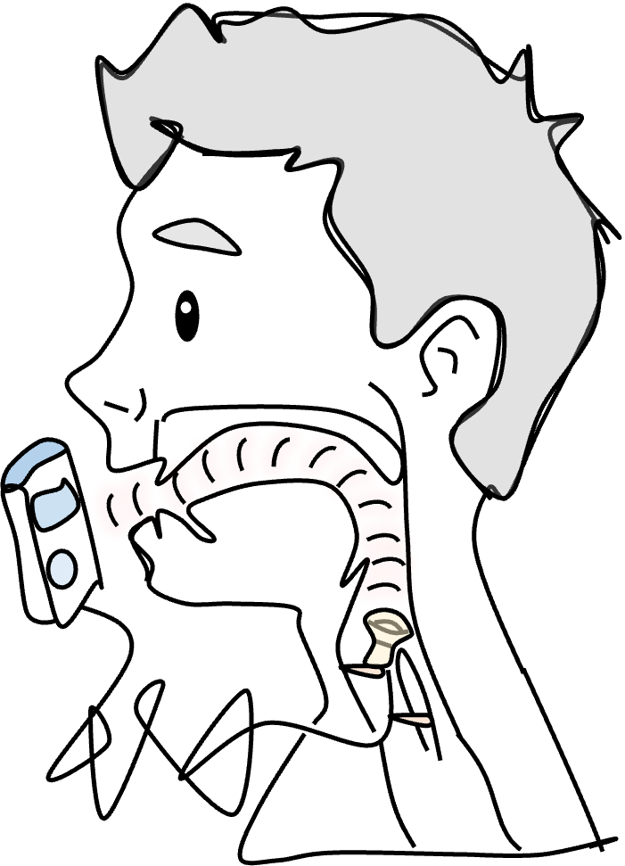

Teaching
Courses
CSD 303: Speech Acoustics and Perception
Intro:
[trailer: listen!]
Resonance:


Alvin Lucier is sitting in a room
,
but Yubin is sitting in your vocal tract.
What happens when Yubin's vocal tract listens to his recorded speech again, again and again?
/a/
/i/
/u/
Ling 410: Speaker Identification
Acoustic Analysis of Prosody: Linguistic and Forensic Applications [lecture, lab, audio]
Ling 285: Human Language and Technology